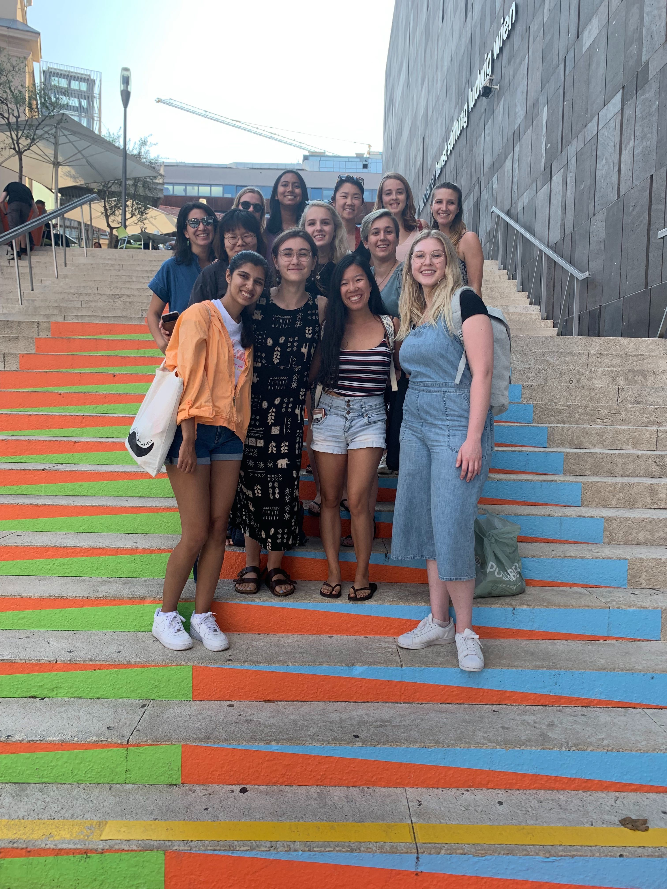

About
This website was created by the 5D students in the Art in Austria Dialogue of Civilizations that happened July 2019. The two courses that we took in Austria were Color, Pattern, Textiles and Creative Coding. A full description of the Dialogue can be found here
